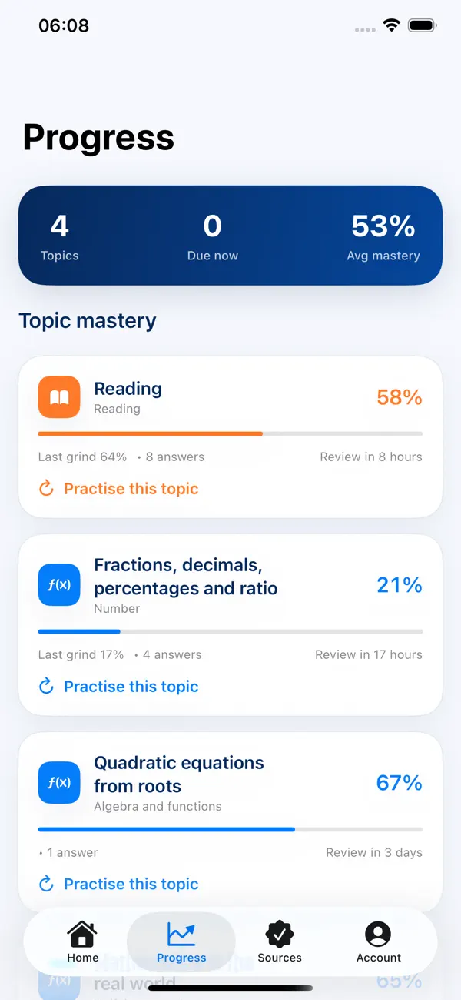
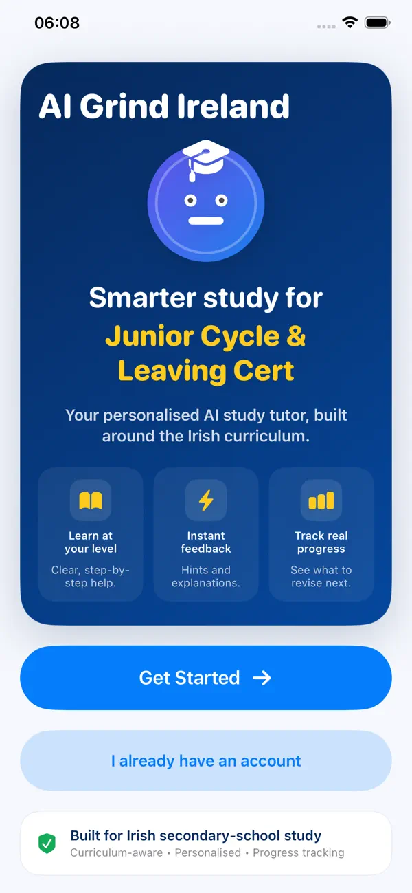
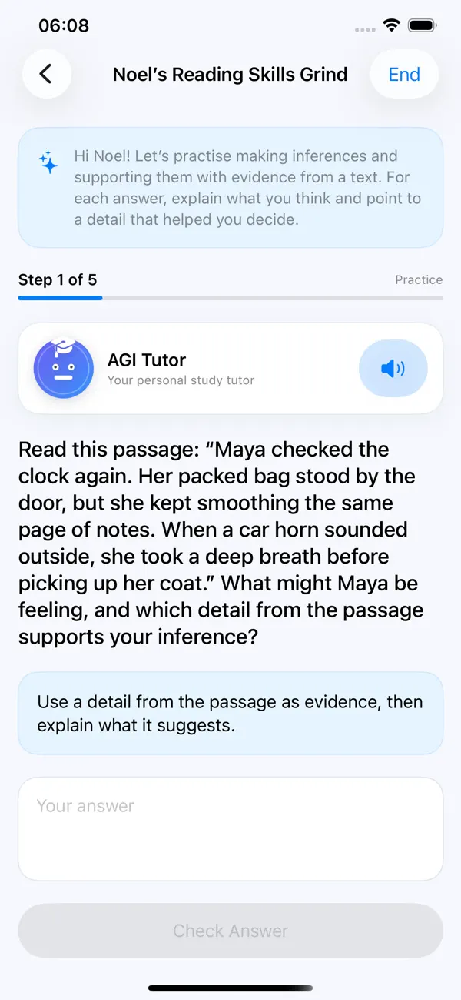

AI study for Irish students
Your own focused grind, built around your year, subjects and level.
Choose a curriculum topic and AGI builds a guided study session with teaching, practice, exam-style questions, instant feedback and progress that carries into your next revision.
AGI Premium: €7.99/month or €59.99/year • 7-day free trial for eligible Apple IDs.


See the real app
Designed to make study feel clear and manageable.
These are the actual production screens students use in AI Grind Ireland.

Built for Irish studySet up a personalised study experience from the start.Everything in one placeStart a Grind, Ask AGI, Exam Practice and resume recent work. Official sources built inQuick links to curriculum, exam papers and marking schemes.
Official sources built inQuick links to curriculum, exam papers and marking schemes.
A real teaching session
Not just another blank AI chat box.
AGI turns a selected topic into a structured, multi-step grind. Students answer, get teaching feedback, move through the session and build a record of what they have actually practised.
Work through one topic without losing focus.
See what was right, what needs work and how to improve.
Hear questions, explanations and feedback aloud when wanted.
Confidence through context
Official curriculum and exam links are only a tap away.
The Sources area gives students direct access to relevant official curriculum pages, State Examinations Commission exam material and marking schemes. AGI keeps the study experience simple while making those reference links easy to reach.
Built around your school programme
Study the programme you actually follow.
AGI filters study choices according to the student’s selected school year, programme, subjects and levels.
For parents & guardians
A clear study tool with useful controls.
Students choose their programme and subjects, progress is tied to curriculum topics, voice is optional, and official-source links are built into the app for easy reference.
AGI keeps personalised study, topic progress and trusted official-source links together in one place.
AGI Premium
Simple App Store pricing.
Both plans unlock the same Premium study features. Choose monthly flexibility or yearly value.
Yearly
- 7-day free trial for eligible Apple IDs
- Personalised grinds
- Exam-style practice
- Adaptive progress & revision
- AGI Voice Tutor
Monthly
- 7-day free trial for eligible Apple IDs
- Same Premium study features
- Flexible monthly access
- Managed through Apple
- Restore Purchases in-app
Questions
Before you start.
Who is AI Grind Ireland for?
It is designed for Irish secondary-school students across Junior Cycle and Senior Cycle programmes who want focused, topic-by-topic study support.
What makes a Grind different from normal AI chat?
A Grind is a structured session built around a curriculum topic. AGI teaches, asks questions, checks answers, gives feedback and records progress.
Can a student listen to AGI?
Yes. The AGI Voice Tutor can read questions, explanations and feedback aloud. Automatic speaking is optional.
Where can students find official references?
The Sources tab links directly to relevant curriculum and State Examinations Commission resources.
How are subscriptions managed?
Subscriptions are purchased and managed through Apple. Restore Purchases is available in the app.
Ready for your next grind?
Choose your year and subjects, pick a curriculum topic and let AGI build the study session around you.